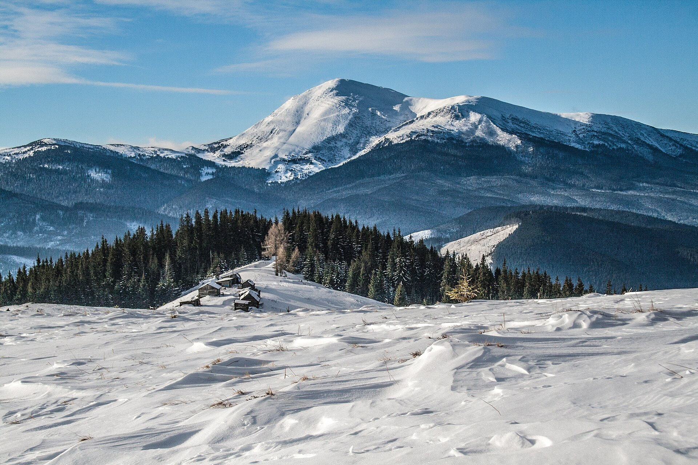

Mount Hoverla
Mount Hoverla (Ukrainian and Rusyn: Говерла), at 2,061 metres (6,762 ft), is the highest mountain in Ukraine and part of the Ukrainian Carpathians. The mountain is located in the Eastern Beskids, in the Chornohora region. The slopes are covered with beech and spruce forests, above which there is a belt of sub-alpine meadows called polonyna in Ukrainian. The main spring of the Prut River is on the eastern slope. The name is most likely of Romanian origin and means 'difficult ascent.' Some sources offer a Hungarian word for a 'snow fortress' as the origin, however this claim lacks logical evidence. Hoverla is composed of sandstone.
The date of the first ascent is unknown. In the late 19th century, the mountain became a notable tourist attraction, especially among tourists from nearby cities of Galicia. In 1880 the first tourist route between the peak of Hoverla and Krasny Luh was marked by Leopold Wajgel of the Galician Tatra Society. The first tourist shelter was built the following year.
In the 20th century, the mountain increasingly gained popularity as an extreme sports site. Some routes are classified as 1A in the winter period (from late autumn to May), according to the Soviet grading system.[2] The most popular approach to the summit starts from the tour-basa Zarosliak on the mountain's eastern face and gains more than 1,100 m (3,600 ft) elevation along a steep path with few hairpin turns. There is a steeper route (marked with blue signs) and a gentler, longer one (marked with green).
